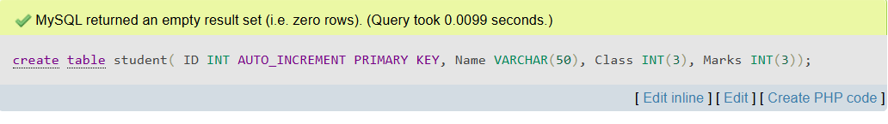
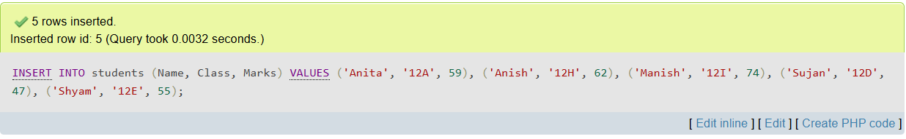
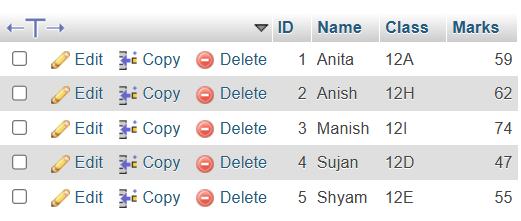
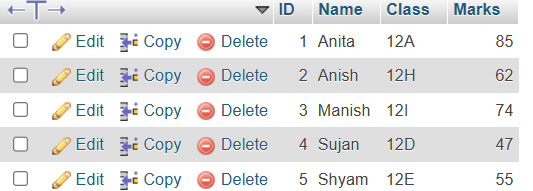
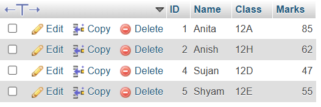

Database management system
Short Answer Questions
1. What is data in the context of a DBMS?
Data refers to raw, unprocessed facts and figures such as numbers, names, or dates. In a DBMS, data is stored in structured formats to be organized and made meaningful through processing.
2. How does information differ from data?
Information is processed data that has been structured and given context to be useful. Unlike raw data, information helps in decision-making and provides meaningful insights.
3. What is a database?
A database is an organized collection of related data stored electronically. It allows for efficient storage, retrieval, and management of data using database software.
4. What are the main features of a DBMS?
- Ensures data integrity and consistency
- Provides security against unauthorized access
- Supports backup and recovery
- Allows concurrent data access
- Maintains data independence
5. List two advantages and two disadvantages of using a DBMS.
Advantages
- Centralized data management
- Reduced data redundancy
Disadvantages
- High initial setup cost
- Requires regular maintenance and skilled personnel
6. What is a relational database model?
The relational model organizes data into tables, where each table consists of rows (records) and columns (fields). It is widely used due to its simplicity, flexibility, and support for SQL-based queries.
7. Define primary key and foreign key.
Primary Key: A field (or combination of fields) that uniquely identifies each record in a table.
Foreign Key: A field in one table that refers to the primary key of another table, establishing a relationship between the two tables.
8. What is normalization? List its first three normal forms.
Normalization is a design process used to organize data in a database to minimize redundancy and improve integrity. The first three normal forms are:
- 1NF: Eliminates repeating groups and ensures atomicity.
- 2NF: Removes partial dependencies on composite primary keys.
- 3NF: Eliminates transitive dependencies between non-key attributes.
9. What is the difference between centralized and distributed databases?
Centralized Database: Stored at a single location, easier to manage, but vulnerable to single-point failures.
Distributed Database: Spread across multiple locations, more reliable and scalable, but harder to manage and maintain.
10. What are domain, entity integrity, and referential integrity constraints?
- Domain Constraint: Ensures values fall within a valid range or type.
- Entity Integrity: Requires primary keys to be unique and not null.
- Referential Integrity: Ensures foreign keys correctly reference existing records.
11. What are two security measures used in DBMS?
The two security measures used in DBMS are:
- Encryption: Protects data during storage and transmission.
- Authentication & Authorization: Verifies identity and grants appropriate access rights.
New Answer Questions
What is Database and DBMS? List out the advantages and disadvantages of DBMS.
A DBMS is a software that allows to create, update and retrieval of data in an organized way. It also provides security to the database.
The advantages of dbms are:
- Organizing and management of data: DBMS helps in managing large amounts of data in an organized manner. It provides features like create, edit, delete, and read.
- Data Security: DBMS provides Security to the data from the unauthorized person.
- Improved decision-making: From stored data in the database we can generate graphs, reports, and many visualizations which helps in decision-making.
- Consistency: In a traditional database model all things are manual or inconsistent, but DBMS enables to automation of the operations by queries.
The disadvantages of dbms are:
- Complexity: DBMS can be hard to design, implement, and manage, needing specialized knowledge.
- Cost: High setup costs, including hardware, software, and skilled personnel, can be expensive. Ongoing maintenance adds to the cost.
- Performance Overhead: DBMS might slow down simple tasks due to their extra features and general-purpose nature.
- Resource Intensive: DBMS need a lot of memory, storage, and processing power, which can be costly.
2. Differentiate between file processing system and DBMS.
The difference between file processing system and DBMS are:
| File Processing System |
DBMS (Database Management System) |
| 1. Data is stored in separate files, leading to redundancy and inconsistency. |
1. Data is stored in a centralized database, reducing redundancy and inconsistency. |
| 2. Each application program manages its own data files independently. |
2. Centralized data management allows multiple applications to share data. |
| 3. Difficult to enforce data integrity constraints. |
3. Provides facilities to enforce integrity constraints (e.g., primary key, foreign key). |
| 4. Limited data security and restricted user access control. |
4. Advanced security features and user access controls ensure data protection. |
| 5. Data retrieval requires complex and repetitive programming. |
5. Powerful query languages (like SQL) make data retrieval easy and efficient. |
| 6. Data isolation: changes in one file may not reflect in other files. |
6. Data integration: changes are reflected consistently across the database. |
| 7. Backups and recovery are manual and often difficult. |
7. Automatic backup and recovery systems protect data from failures. |
| 8. Does not support multi-user access easily; concurrency control is weak. |
8. Supports multiple users simultaneously with strong concurrency control. |
| 9. Scalability is poor; difficult to handle large amounts of data. |
9. Highly scalable; designed to handle large databases efficiently. |
Explain the different models of DBMS with advantages and disadvantages.
1. Hierarchical Model
Description: Data is organized in a tree-like structure with parent-child relationships.
Advantages:
- Simple and easy to design.
- Good data security due to hierarchy.
- Efficient for one-to-many relationships.
Disadvantages:
- Not suitable for many-to-many relationships.
- Difficult to modify the structure.
- Data redundancy may occur.
2. Network Model
Description: Data is organized as records connected by links, forming a graph. Supports many-to-many relationships.
Advantages:
- Can handle complex relationships.
- More flexible than the hierarchical model.
- Faster data access due to multiple paths.
Disadvantages:
- Complex to design and maintain.
- Navigation through links can be difficult.
3. Relational Model
Description: Data is stored in tables (relations) consisting of rows and columns. Uses SQL for data management.
Advantages:
- Simple and easy to use.
- Powerful query capabilities (SQL).
- Flexible and provides data independence.
Disadvantages:
- Not ideal for complex data types like images or multimedia.
- May require more resources for processing large databases.
4. Object-Oriented Model
Description: Data is stored as objects, integrating database concepts with object-oriented programming features.
Advantages:
- Good for complex data types (images, videos).
- Supports inheritance and encapsulation.
- Better real-world data representation.
Disadvantages:
- More complex to design and implement.
- Less popular than relational model; limited tools available.
What is a Relational Database?
A relational database is a type of database that stores data in the form of tables (called relations).
Each table consists of rows (records) and columns (fields). Data in different tables can be related
to each other through keys, such as primary keys and foreign keys.
The relational database model was introduced by E.F. Codd in 1970 and is widely used due to its simplicity,
flexibility, and the power of Structured Query Language (SQL) for data management and querying.
How is it Different from Other Database Models?
1. Hierarchical Model:
- Hierarchical model organizes data in a tree-like structure with parent-child relationships.
- Relational model uses tables with no strict hierarchy, allowing more flexible data access.
- Relational databases can easily handle many-to-many relationships, while hierarchical models cannot.
2. Network Model:
- Network model organizes data as a graph, allowing multiple parent-child relationships.
- Relational model simplifies this by using tables and keys to establish relationships.
- Navigation in network model is complex due to pointers, whereas relational model uses SQL for easy access.
3. Object-Oriented Model:
- Object-oriented model stores data as objects with properties and methods, like in OOP languages.
- Relational model uses simple tables with rows and columns, without directly supporting methods.
- Object-oriented databases are better for multimedia and complex data, while relational databases are best for structured data.
Key Differences:
- Structure: Relational uses tables; other models use trees, graphs, or objects.
- Flexibility: Relational model is more flexible for ad-hoc queries.
- Standard Language: Relational databases use SQL, a widely accepted standard.
- Relationships: Relational databases easily handle complex relationships using keys.
What is Data Redundancy?
Data redundancy means storing the same piece of data in multiple places within a database or file system.
It occurs when the same data is unnecessarily duplicated in different files or tables. For example, in
a traditional file processing system, a customer’s address might be stored separately in different files
for billing, shipping, and customer support. This leads to wasted storage space and can cause
inconsistencies when updates are made in one place but not in others.
How Does a DBMS Help in Reducing Data Redundancy?
A Database Management System (DBMS) helps reduce data redundancy by storing data in a centralized database
where data is organized into tables and shared among multiple applications. Data normalization techniques
are used to structure the database so that each piece of information is stored only once, and related
data is linked through keys. This centralized control ensures that updates made to data are reflected
throughout the entire database, eliminating unnecessary duplication and maintaining consistency and
accuracy of information.
Difference between centralized databse system and distributed database system.
| Centralized Database System |
Distributed Database System |
| All data is stored in a single central location. |
Data is stored across multiple interconnected locations. |
| Users access data through a central server. |
Users can access data from multiple sites or nodes. |
| Less complex to design and manage. |
More complex to design due to data distribution and synchronization. |
| Failure of the central server can cause total system failure. |
Failure at one site does not affect the entire system; higher fault tolerance. |
| Data access speed may be slower for remote users. |
Faster local data access for users near each distributed site. |
| Expansion and scaling can be challenging and costly. |
More scalable; new sites can be added easily. |
Who is a Database Administrator (DBA)? Write the major Responsibilities of a DBA.
A Database Administrator (DBA) is a person responsible for managing, maintaining, and securing a database system.
The DBA ensures that the database is available, performs efficiently, remains secure, and is protected against
data loss or corruption. DBAs play a crucial role in the daily operations of organizations that rely on databases
to store and process large amounts of information.
Major Responsibilities of a DBA are:
- Database Design: Designing the structure of the database, including tables, relationships, and constraints.
- Data Security: Implementing access controls and security measures to protect data from unauthorized access or breaches.
- Backup and Recovery: Creating backup plans and recovery procedures to prevent data loss in case of failures.
- Performance Monitoring: Monitoring database performance and tuning it for optimal speed and efficiency.
- User Management: Creating and managing user accounts and permissions to ensure only authorized users have access.
- Data Integrity: Ensuring the accuracy and consistency of data through integrity constraints and validation rules.
- Software Updates: Installing and updating database management software and applying necessary patches.
- Troubleshooting: Identifying and resolving database-related problems and errors.
Define normalization. Explain 1NF, 2NF and 3NF with suitable examples. Explain the normalization process with examples.
you can use tables for examples
Normalization is the process of organizing data in a database to reduce data redundancy and improve data integrity.
It involves dividing large tables into smaller, related tables and defining relationships between them.
The main goal of normalization is to eliminate duplicate data, ensure data dependencies make sense,
and store data efficiently.
First Normal Form (1NF)
A table is in First Normal Form (1NF) if it contains only atomic (indivisible) values and each column
contains values of a single type. There must be no repeating groups or arrays.
Example: Unnormalized data:
| Student_ID |
Student_Name |
Subjects |
| 1 |
Alice |
Math, English |
| 2 |
Bob |
Science, Math |
Normalized to 1NF:
| Student_ID |
Student_Name |
Subject |
| 1 |
Alice |
Math |
| 1 |
Alice |
English |
| 2 |
Bob |
Science |
| 2 |
Bob |
Math |
Second Normal Form (2NF)
A table is in Second Normal Form (2NF) if it is in 1NF and all non-key attributes are fully functionally
dependent on the entire primary key. This means removing partial dependencies.
Example: 1NF table (with partial dependency):
| Student_ID |
Subject |
Student_Name |
Teacher |
| 1 |
Math |
Alice |
Mr. Smith |
| 1 |
English |
Alice |
Ms. Johnson |
Normalized to 2NF:
Students Table:
| Student_ID |
Student_Name |
| 1 |
Alice |
Subjects Table:
| Subject |
Teacher |
| Math |
Mr. Smith |
| English |
Ms. Johnson |
Student_Subjects Table:
| Student_ID |
Subject |
| 1 |
Math |
| 1 |
English |
Third Normal Form (3NF)
A table is in Third Normal Form (3NF) if it is in 2NF and all non-key attributes are only dependent on the primary key,
not on other non-key attributes. This means removing transitive dependencies.
Example: 2NF table with transitive dependency:
| Student_ID |
Subject |
Teacher |
Department |
| 1 |
Math |
Mr. Smith |
Mathematics |
| 1 |
English |
Ms. Johnson |
Languages |
Normalized to 3NF:
Subjects Table:
| Subject |
Teacher |
| Math |
Mr. Smith |
| English |
Ms. Johnson |
Teachers Table:
| Teacher |
Department |
| Mr. Smith |
Mathematics |
| Ms. Johnson |
Languages |
Student_Subjects Table:
| Student_ID |
Subject |
| 1 |
Math |
| 1 |
English |
Explain the terms: primary key, foreign key, and candidate key with examples.
Primary Key
A Primary Key is a column or a set of columns in a table that uniquely identifies each row in that table.
It must contain unique values and cannot have NULL values. Each table can have only one primary key.
Example:
- In a Students table,
Student_ID can be the primary key since it uniquely identifies each student.
Foreign Key
A Foreign Key is a column or a set of columns in one table that refers to the primary key in another table.
It is used to establish and enforce a link between the data in two tables.
Example:
- In a Enrollments table,
Student_ID can be a foreign key referring to the Student_ID primary key in the Students table.
Candidate Key
A Candidate Key is a column, or a set of columns, that can uniquely identify any row in the table.
There can be multiple candidate keys in a table, and one of them is chosen as the primary key.
Example:
- In a Employees table, both
Employee_ID and Social_Security_Number could be candidate keys because each uniquely identifies an employee.
- One of these candidate keys, say
Employee_ID, is chosen as the primary key.
Explain the terms: primary key, foreign key, and candidate key with examples.
Primary Key
A Primary Key uniquely identifies each record in a table. It must be unique and cannot be NULL.
Example: Students Table
| Student_ID (Primary Key) |
Student_Name |
Age |
| 101 | Alice | 20 |
| 102 | Bob | 21 |
| 103 | Charlie | 19 |
Foreign Key
A Foreign Key is a column that creates a link between two tables by referring to the Primary Key of another table.
Example: Enrollments Table
| Enrollment_ID |
Student_ID (Foreign Key) |
Course |
| 1 | 101 | Math |
| 2 | 102 | English |
| 3 | 103 | Science |
Candidate Key
A Candidate Key is any column or set of columns that can uniquely identify rows in a table.
One candidate key is selected as the Primary Key.
Example: Employees Table
| Employee_ID (Candidate Key) |
Social_Security_Number (Candidate Key) |
Employee_Name |
| 201 | 123-45-6789 | David |
| 202 | 987-65-4321 | Eve |
| 203 | 456-78-9012 | Frank |
What is SQL? Explain its components and common functions.
SQL (Structured Query Language) is a standard programming language used to manage and manipulate relational databases.
It allows users to create, read, update, and delete data stored in database tables.
SQL is widely used because of its simplicity and power in handling large volumes of data efficiently.
It is the foundation for interacting with most relational database management systems like MySQL, PostgreSQL, Oracle, and SQL Server.
The components of SQL are:
1. Data Definition Language (DDL)
DDL commands define and modify the structure of database objects such as tables, indexes, and schemas. Common DDL commands include:
- CREATE: To create new database objects like tables or databases.
- ALTER: To modify existing database structures.
- DROP: To delete tables or other database objects.
2. Data Manipulation Language (DML)
DML commands are used to manipulate data stored in the database. These commands allow users to insert, update, delete, and retrieve data. Examples include:
- SELECT: Retrieve data from one or more tables.
- INSERT: Add new records into a table.
- UPDATE: Modify existing data within a table.
- DELETE: Remove records from a table.
3. Data Control Language (DCL)
DCL commands manage permissions and access control to the database. They regulate who can do what with the data. Key commands are:
- GRANT: Give users permission to perform certain tasks.
- REVOKE: Remove previously granted permissions.
4. Transaction Control Language (TCL)
TCL commands manage transactions to ensure data integrity. Transactions are sequences of operations treated as a single unit. Important TCL commands include:
- COMMIT: Save all changes made in the current transaction.
- ROLLBACK: Undo changes made in the current transaction.
- SAVEPOINT: Set a point within a transaction to which you can later roll back.
Common SQL Functions
Aggregate Functions
These perform calculations on multiple rows and return a single value. Examples include:
- COUNT(): Counts the number of rows.
- SUM(): Adds up values in a column.
- AVG(): Calculates the average of numeric values.
- MAX(): Finds the highest value.
- MIN(): Finds the lowest value.
String Functions
These manipulate text data. Examples include:
- CONCAT(): Concatenates (joins) two or more strings.
- UPPER() / LOWER(): Converts text to uppercase or lowercase.
- SUBSTRING(): Extracts a part of a string.
Define the following terms.
| Term |
Definition |
| Data Dictionary |
A centralized repository that stores metadata about the database objects such as tables, columns, data types, and relationships, helping users and applications understand the database structure. |
| Primary Key |
A column or set of columns in a table that uniquely identifies each record in that table. It must contain unique values and cannot be NULL. |
| Relationship |
The association between two or more tables in a database, usually defined through keys, such as one-to-one, one-to-many, or many-to-many relationships. |
| Data Manipulation Language (DML) |
A subset of SQL used to retrieve, insert, update, and delete data within a database. Common DML commands include SELECT, INSERT, UPDATE, and DELETE. |
| Structured Query Language (SQL) |
A standardized programming language used for managing and manipulating relational databases through commands such as data definition, data manipulation, and data control. |
| Data Integrity |
The accuracy, consistency, and reliability of data stored in a database, ensured by rules and constraints like primary keys, foreign keys, and validation checks. |
| Data Definition Language (DDL) |
A subset of SQL commands used to define and modify database structures, including creating, altering, and dropping tables and other database objects. |
| Data Security |
Measures and controls implemented to protect database data from unauthorized access, breaches, or corruption. |
| Database System |
A collection of related data and a set of programs that manage the data, providing an interface between users and the database for efficient data storage, retrieval, and management. |
Write SQL commands to perform the following operations:-
a.Create a table named students with the fields: Id, Name, Class, and Marks.
code:
CREATE TABLE students( ID INT AUTO_INCREMENT PRIMARY KEY, Name VARCHAR(50), Class VARCHAR(10), Marks INT(3));
OUTPUT:

b.Insert records into the students table with appropriate values.
code:
INSERT INTO students (Name, Class, Marks) VALUES ('Anita', '12A', 59), ('Anish', '12H', 62), ('Manish', '12I', 74), ('Sujan', '12D', 47), ('Shyam', '12E', 55);
OUTPUT

c.Display all records from the students table.
code:
SELECT * FROM students;
OUTPUT:

d.Update the marks of a student whose name is 'Anita' to 85.
code:
UPDATE students SET Marks = 85 WHERE Name = 'Anita';
OUTPUT:

e.Delete the record of the student with id = 3.
code:
DELETE FROM 'students' WHERE id = 3;
OUTPUT:

Data communication and networking
NOT YET
Web Tech-II
NOT YET
C Programming II
NOT YET
Object oriented programming
NOT YET
Software development life cycle
NOT YET
Recent Trends in technology
NOT YET